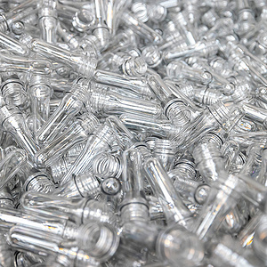
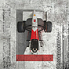

© imagine Coca-Cola
Portofoliul Coca-Cola produs în România este disponibil în sticle, cu
excepția etichetelor și a capacelor, fabricate din 100% PET reciclat.
RECICLAT, -Ă, reciclați, -te, adj. (Despre deșeuri) Care
a suferit un proces de reciclare. – V. recicla.
sursa: DEX '09 (2009) adăugată de
blaurb. acțiuni

Noiembrie 2025
Cuvântul zilei de 21 noiembrie în alți ani:

2024: advecție
În 1783, primii care s-au ridicat în aer într-un balon cu aer cald
au fost francezii François Pilâtre de Rozier și Marchizul
d’Arlandes.

2023: solda
În 2004, alegerea frauduloasă a candidatului pro-rus Viktor
Ianukovici în funcția de președinte al Ucrainei a scos opoziția în
stradă. Mișcarea s-a numit „Revoluția portocalie” după culoarea
eșarfei purtate de demonstranți. Alegerile au fost anulate.

2022: dragster
Ziua mondială de comemorare a victimelor accidentelor de circulație
(ONU)

2021: zatocenie
În 1960 Vintilă Horia a câștigat Premiul Goncourt (în Franța) pentru
Dumnezeu s-a născut în exil, dar nu i-a fost acordat din cauza
istoricului său: în trecut fusese atras de extrema dreaptă și
scrisese articole pro fasciste.

2020: răcan
S-a născut în 1945 actrița americană Goldie Hawn. Printre filmele
sale se numără și Benjamin, recrut fără voie.